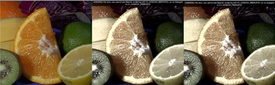

Interoperability with OpenCV 1¶
Goal¶
For the OpenCV developer team it’s important to constantly improve the library. We are constantly thinking about methods that will ease your work process, while still maintain the libraries flexibility. The new C++ interface is a development of us that serves this goal. Nevertheless, backward compatibility remains important. We do not want to break your code written for earlier version of the OpenCV library. Therefore, we made sure that we add some functions that deal with this. In the following you’ll learn:
- What changed with the version 2 of OpenCV in the way you use the library compared to its first version
- How to add some Gaussian noise to an image
- What are lookup tables and why use them?
General¶
When making the switch you first need to learn some about the new data structure for images: Mat - The Basic Image Container, this replaces the old CvMat and IplImage ones. Switching to the new functions is easier. You just need to remember a couple of new things.
OpenCV 2 received reorganization. No longer are all the functions crammed into a single library. We have many modules, each of them containing data structures and functions relevant to certain tasks. This way you do not need to ship a large library if you use just a subset of OpenCV. This means that you should also include only those headers you will use. For example:
#include <opencv2/core/core.hpp>
#include <opencv2/imgproc/imgproc.hpp>
#include <opencv2/highgui/highgui.hpp>
All the OpenCV related stuff is put into the cv namespace to avoid name conflicts with other libraries data structures and functions. Therefore, either you need to prepend the cv:: keyword before everything that comes from OpenCV or after the includes, you just add a directive to use this:
using namespace cv; // The new C++ interface API is inside this namespace. Import it.
Because the functions are already in a namespace there is no need for them to contain the cv prefix in their name. As such all the new C++ compatible functions don’t have this and they follow the camel case naming rule. This means the first letter is small (unless it’s a name, like Canny) and the subsequent words start with a capital letter (like copyMakeBorder).
Now, remember that you need to link to your application all the modules you use, and in case you are on Windows using the DLL system you will need to add, again, to the path all the binaries. For more in-depth information if you’re on Windows read How to build applications with OpenCV inside the Microsoft Visual Studio and for Linux an example usage is explained in Using OpenCV with Eclipse (plugin CDT).
Now for converting the Mat object you can use either the IplImage or the CvMat operators. While in the C interface you used to work with pointers here it’s no longer the case. In the C++ interface we have mostly Mat objects. These objects may be freely converted to both IplImage and CvMat with simple assignment. For example:
Mat I;
IplImage pI = I;
CvMat mI = I;
Now if you want pointers the conversion gets just a little more complicated. The compilers can no longer automatically determinate what you want and as you need to explicitly specify your goal. This is to call the IplImage and CvMat operators and then get their pointers. For getting the pointer we use the & sign:
Mat I;
IplImage* pI = &I.operator IplImage();
CvMat* mI = &I.operator CvMat();
One of the biggest complaints of the C interface is that it leaves all the memory management to you. You need to figure out when it is safe to release your unused objects and make sure you do so before the program finishes or you could have troublesome memory leeks. To work around this issue in OpenCV there is introduced a sort of smart pointer. This will automatically release the object when it’s no longer in use. To use this declare the pointers as a specialization of the Ptr :
Ptr<IplImage> piI = &I.operator IplImage();
Converting from the C data structures to the Mat is done by passing these inside its constructor. For example:
Mat K(piL), L;
L = Mat(pI);
A case study¶
Now that you have the basics done here's an example that mixes the usage of the C interface with the C++ one. You will also find it in the sample directory of the OpenCV source code library at the samples/cpp/tutorial_code/core/interoperability_with_OpenCV_1/interoperability_with_OpenCV_1.cpp . To further help on seeing the difference the programs supports two modes: one mixed C and C++ and one pure C++. If you define the DEMO_MIXED_API_USE you’ll end up using the first. The program separates the color planes, does some modifications on them and in the end merge them back together.
1 2 3 4 5 6 7 8 9 10 11 12 13 14 15 16 17 18 19 20 21 22 23 24 25 26 27 28 29 30 31 | #include <stdio.h>
#include <iostream>
#include <opencv2/core/core.hpp>
#include <opencv2/imgproc/imgproc.hpp>
#include <opencv2/highgui/highgui.hpp>
using namespace cv; // The new C++ interface API is inside this namespace. Import it.
using namespace std;
#define DEMO_MIXED_API_USE
int main( int argc, char** argv )
{
const char* imagename = argc > 1 ? argv[1] : "lena.jpg";
#ifdef DEMO_MIXED_API_USE
Ptr<IplImage> IplI = cvLoadImage(imagename); // Ptr<T> is safe ref-counting pointer class
if(IplI.empty())
{
cerr << "Can not load image " << imagename << endl;
return -1;
}
Mat I(IplI); // Convert to the new style container. Only header created. Image not copied.
#else
Mat I = imread(imagename); // the newer cvLoadImage alternative, MATLAB-style function
if( I.empty() ) // same as if( !I.data )
{
cerr << "Can not load image " << imagename << endl;
return -1;
}
#endif
|
Here you can observe that with the new structure we have no pointer problems, although it is possible to use the old functions and in the end just transform the result to a Mat object.
1 2 3 4 5 6 | // convert image to YUV color space. The output image will be created automatically.
Mat I_YUV;
cvtColor(I, I_YUV, COLOR_BGR2YCrCb);
vector<Mat> planes; // Use the STL's vector structure to store multiple Mat objects
split(I_YUV, planes); // split the image into separate color planes (Y U V)
|
Because, we want to mess around with the images luma component we first convert from the default BGR to the YUV color space and then split the result up into separate planes. Here the program splits: in the first example it processes each plane using one of the three major image scanning algorithms in OpenCV (C [] operator, iterator, individual element access). In a second variant we add to the image some Gaussian noise and then mix together the channels according to some formula.
The scanning version looks like:
1 2 3 4 5 6 7 8 9 10 11 12 13 14 15 16 17 18 19 20 21 | // Method 1. process Y plane using an iterator
MatIterator_<uchar> it = planes[0].begin<uchar>(), it_end = planes[0].end<uchar>();
for(; it != it_end; ++it)
{
double v = *it * 1.7 + rand()%21 - 10;
*it = saturate_cast<uchar>(v*v/255);
}
for( int y = 0; y < I_YUV.rows; y++ )
{
// Method 2. process the first chroma plane using pre-stored row pointer.
uchar* Uptr = planes[1].ptr<uchar>(y);
for( int x = 0; x < I_YUV.cols; x++ )
{
Uptr[x] = saturate_cast<uchar>((Uptr[x]-128)/2 + 128);
// Method 3. process the second chroma plane using individual element access
uchar& Vxy = planes[2].at<uchar>(y, x);
Vxy = saturate_cast<uchar>((Vxy-128)/2 + 128);
}
}
|
Here you can observe that we may go through all the pixels of an image in three fashions: an iterator, a C pointer and an individual element access style. You can read a more in-depth description of these in the How to scan images, lookup tables and time measurement with OpenCV tutorial. Converting from the old function names is easy. Just remove the cv prefix and use the new Mat data structure. Here’s an example of this by using the weighted addition function:
1 2 3 4 5 6 7 8 9 10 11 12 13 14 15 16 17 18 19 20 21 22 23 24 25 26 27 28 29 30 31 32 33 34 | Mat noisyI(I.size(), CV_8U); // Create a matrix of the specified size and type
// Fills the matrix with normally distributed random values (around number with deviation off).
// There is also randu() for uniformly distributed random number generation
randn(noisyI, Scalar::all(128), Scalar::all(20));
// blur the noisyI a bit, kernel size is 3x3 and both sigma's are set to 0.5
GaussianBlur(noisyI, noisyI, Size(3, 3), 0.5, 0.5);
const double brightness_gain = 0;
const double contrast_gain = 1.7;
#ifdef DEMO_MIXED_API_USE
// To pass the new matrices to the functions that only work with IplImage or CvMat do:
// step 1) Convert the headers (tip: data will not be copied).
// step 2) call the function (tip: to pass a pointer do not forget unary "&" to form pointers)
IplImage cv_planes_0 = planes[0], cv_noise = noisyI;
cvAddWeighted(&cv_planes_0, contrast_gain, &cv_noise, 1, -128 + brightness_gain, &cv_planes_0);
#else
addWeighted(planes[0], contrast_gain, noisyI, 1, -128 + brightness_gain, planes[0]);
#endif
const double color_scale = 0.5;
// Mat::convertTo() replaces cvConvertScale.
// One must explicitly specify the output matrix type (we keep it intact - planes[1].type())
planes[1].convertTo(planes[1], planes[1].type(), color_scale, 128*(1-color_scale));
// alternative form of cv::convertScale if we know the datatype at compile time ("uchar" here).
// This expression will not create any temporary arrays ( so should be almost as fast as above)
planes[2] = Mat_<uchar>(planes[2]*color_scale + 128*(1-color_scale));
// Mat::mul replaces cvMul(). Again, no temporary arrays are created in case of simple expressions.
planes[0] = planes[0].mul(planes[0], 1./255);
|
As you may observe the planes variable is of type Mat. However, converting from Mat to IplImage is easy and made automatically with a simple assignment operator.
1 2 3 4 5 6 7 8 9 10 11 12 | merge(planes, I_YUV); // now merge the results back
cvtColor(I_YUV, I, CV_YCrCb2BGR); // and produce the output RGB image
namedWindow("image with grain", WINDOW_AUTOSIZE); // use this to create images
#ifdef DEMO_MIXED_API_USE
// this is to demonstrate that I and IplI really share the data - the result of the above
// processing is stored in I and thus in IplI too.
cvShowImage("image with grain", IplI);
#else
imshow("image with grain", I); // the new MATLAB style function show
|
The new imshow highgui function accepts both the Mat and IplImage data structures. Compile and run the program and if the first image below is your input you may get either the first or second as output:
You may observe a runtime instance of this on the YouTube here and you can download the source code from here or find it in the samples/cpp/tutorial_code/core/interoperability_with_OpenCV_1/interoperability_with_OpenCV_1.cpp of the OpenCV source code library.
Help and Feedback
You did not find what you were looking for?- Ask a question on the Q&A forum.
- If you think something is missing or wrong in the documentation, please file a bug report.

Table Of Contents
Previous topic
File Input and Output using XML and YAML files
Next topic
imgproc module. Image Processing